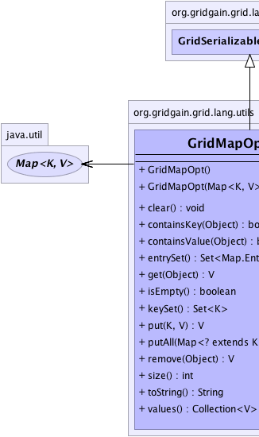
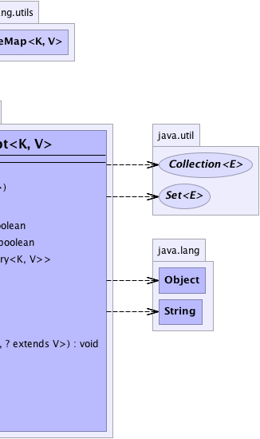

java.util.AbstractMap<K,V>
org.gridgain.grid.lang.utils.GridSerializableMap<K,V>
org.gridgain.grid.lang.utils.GridMapOpt<K,V>
java.util.AbstractMap<K,V>
org.gridgain.grid.lang.utils.GridSerializableMap<K,V>
org.gridgain.grid.lang.utils.GridMapOpt<K,V>
|
GridGain™ 3.6.0c
Community Edition |
|||||||||
| PREV CLASS NEXT CLASS | FRAMES NO FRAMES | |||||||||
| SUMMARY: NESTED | FIELD | CONSTR | METHOD | DETAIL: FIELD | CONSTR | METHOD | |||||||||
java.lang.Object
public class GridMapOpt<K,V>
Monadic map. This class can be optionally created with null implementation in
which case it will act as an empty map.
| Wiki | |
| Forum |
|  |  |
| Nested Class Summary |
|---|
| Nested classes/interfaces inherited from class java.util.AbstractMap |
|---|
AbstractMap.SimpleEntry<K,V>, AbstractMap.SimpleImmutableEntry<K,V> |
| Nested classes/interfaces inherited from interface java.util.Map |
|---|
Map.Entry<K,V> |
| Constructor Summary | |
|---|---|
GridMapOpt()
Calls this(null);. |
|
GridMapOpt(Map<K,V> impl)
Creates monadic map with optional implementation. |
|
| Method Summary | |
|---|---|
void |
clear()
|
boolean |
containsKey(Object key)
|
boolean |
containsValue(Object val)
|
Set<Map.Entry<K,V>> |
entrySet()
|
V |
get(Object key)
|
boolean |
isEmpty()
|
Set<K> |
keySet()
|
V |
put(K key,
V val)
|
void |
putAll(Map<? extends K,? extends V> m)
|
V |
remove(Object key)
|
int |
size()
|
String |
toString()
|
Collection<V> |
values()
|
| Methods inherited from class java.util.AbstractMap |
|---|
clone, equals, hashCode |
| Methods inherited from class java.lang.Object |
|---|
finalize, getClass, notify, notifyAll, wait, wait, wait |
| Constructor Detail |
|---|
public GridMapOpt(@Nullable
Map<K,V> impl)
impl - If null - this will act as an empty map, otherwise
it will use given implementation.public GridMapOpt()
this(null);.
| Method Detail |
|---|
public int size()
size in interface Map<K,V>size in class AbstractMap<K,V>public boolean isEmpty()
isEmpty in interface Map<K,V>isEmpty in class AbstractMap<K,V>public boolean containsKey(Object key)
containsKey in interface Map<K,V>containsKey in class AbstractMap<K,V>public boolean containsValue(Object val)
containsValue in interface Map<K,V>containsValue in class AbstractMap<K,V>public V get(Object key)
get in interface Map<K,V>get in class AbstractMap<K,V>
public V put(K key,
V val)
put in interface Map<K,V>put in class AbstractMap<K,V>public V remove(Object key)
remove in interface Map<K,V>remove in class AbstractMap<K,V>public void putAll(Map<? extends K,? extends V> m)
putAll in interface Map<K,V>putAll in class AbstractMap<K,V>public void clear()
clear in interface Map<K,V>clear in class AbstractMap<K,V>public Set<K> keySet()
keySet in interface Map<K,V>keySet in class AbstractMap<K,V>public Collection<V> values()
values in interface Map<K,V>values in class AbstractMap<K,V>public Set<Map.Entry<K,V>> entrySet()
entrySet in interface Map<K,V>entrySet in class AbstractMap<K,V>public String toString()
toString in class AbstractMap<K,V>
|
GridGain™ 3.6.0c
Community Edition |
|||||||||
| PREV CLASS NEXT CLASS | FRAMES NO FRAMES | |||||||||
| SUMMARY: NESTED | FIELD | CONSTR | METHOD | DETAIL: FIELD | CONSTR | METHOD | |||||||||
|
GridGain - Real Time Big Data
|
|

|
|